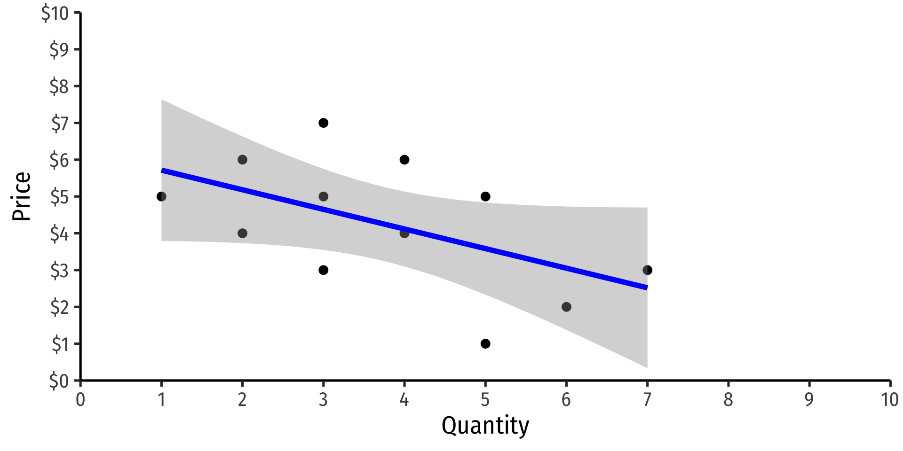

5.3 — Instrumental Variables
ECON 480 • Econometrics • Fall 2022
Dr. Ryan Safner
Associate Professor of Economics
safner@hood.edu
ryansafner/metricsF22
metricsF22.classes.ryansafner.com
Contents
Instrumental Variables Models
Two Stage Least Squares
Simultaneous Causation & Structural Equation Modeling
Clever Research Designs Identify Causality
Again, this toolkit of research designs to identify causal effects is the economist’s comparative advantage that firms and governments want!

Identification Strategies
Endogeneity remains the hardest (and most common) econometric challenge
Diff-n-diff/fixed effects are one strategy to minimize endogeneity
- Requires panel data
- Can’t use time-varying omitted variables that are correlated with regressors
Another strategy to is to find some source of exogenous variation that removes the endogeneity of a variable, using that source as a instrumental variable
Identification Strategies
Endogeneity remains the hardest (and most common) econometric challenge
Diff-n-diff/fixed effects are one strategy to minimize endogeneity
- Requires panel data
- Can’t use time-varying omitted variables that are correlated with regressors
Another strategy to is to find some source of exogenous variation that removes the endogeneity of a variable, using that source as a instrumental variable
Instrumental Variables Models
Understanding Instruments
X and Y are correlated
Consider confounding variable Z that would meet the conditions of omitted variable bias:
- Causes \(Y\) (in error term \(u)\)
- Correlated with \(X\)
Causal pathways from \(X\) to \(Y\):
- \(X \rightarrow Y\) (causal, front door)
- \(X \leftarrow Z \rightarrow Y\) (non-causal, back door)
Consider variable I which causes X but not Y
Understanding Instruments

Variable I has no backdoors between it and \(Y\)
The only way to reach \(Y\) from \(I\) is through \(X\):
- \(I \rightarrow X \rightarrow Y\)
Variable I is a good instrument for \(X\) if it satisfies two conditions:
- Inclusion condition: \(I\) statistically-significantly explains \(X\)
- Exclusion condition: \(I\) is uncorrelated with \(u\), so it does not directly affect \(Y\)
- \(I\) only affects \(Y\) through its effect on \(X\)
Example I: Veterans’ Earnings
Example
How does veteran status affect lifetime earnings?
\[\text{Earnings}_{i}=\beta_0+\beta_1 \, \text{Veteran}_{i}+\text{u}_{i}\]
- \(\text{Veteran}_i\) is endogenous, correlated with other things in \(u_i\)
- Choice to enlist in military for non-random reasons
Example I: Exogeneous and Endogenous Variation
- Imagine if we could split variation in \(\text{Veteran}_i\) into an exogenous part and an endogenous part:
\[\begin{align*} \color{green}{\text{Earnings}_i} &= \beta_0 + \beta_1 \, \color{red}{\text{Veteran}_i} + u_i \\ \end{align*}\]
Example I: Exogeneous and Endogenous Variation
- Imagine if we could split variation in \(\text{Veteran}_i\) into an exogenous part and an endogenous part:
\[\begin{align*} \color{green}{\text{Earnings}_i} &= \beta_0 + \beta_1 \, \color{red}{\text{Veteran}_i} + u_i \\ \color{green}{\text{Earnings}_i} &= \beta_0 + \beta_1 \, (\color{blue}{\text{Veteran}_i^{Ex.}}+\color{red}{\text{Veteran}_i^{End.}})+u_i\\ \end{align*}\]
Example I: Exogeneous and Endogenous Variation
- Imagine if we could split variation in \(\text{Veteran}_i\) into an exogenous part and an endogenous part:
\[\begin{align*} \color{green}{\text{Earnings}_i} &= \beta_0 + \beta_1 \, \color{red}{\text{Veteran}_i} + u_i \\ \color{green}{\text{Earnings}_i} &= \beta_0 + \beta_1 \, (\color{blue}{\text{Veteran}_i^{Ex.}}+\color{red}{\text{Veteran}_i^{End.}})+u_i\\ \color{green}{\text{Earnings}_i} &= \beta_0 + \beta_1 \, \color{blue}{\text{Veteran}_i^{Ex.}}+ \underbrace{\beta_1 \color{red}{\text{Veteran}_i^{End.}}+u_i}_{w_i}\\ \end{align*}\]
Example I: Exogeneous and Endogenous Variation
- Imagine if we could split variation in \(\text{Veteran}_i\) into an exogenous part and an endogenous part:
\[\begin{align*} \color{green}{\text{Earnings}_i} &= \beta_0 + \beta_1 \, \color{red}{\text{Veteran}_i} + u_i \\ \color{green}{\text{Earnings}_i} &= \beta_0 + \beta_1 \, (\color{blue}{\text{Veteran}_i^{Ex.}}+\color{red}{\text{Veteran}_i^{End.}})+u_i\\ \color{green}{\text{Earnings}_i} &= \beta_0 + \beta_1 \, \color{blue}{\text{Veteran}_i^{Ex.}}+ \underbrace{\beta_1 \color{red}{\text{Veteran}_i^{End.}}+u_i}_{w_i}\\ \color{green}{\text{Earnings}_i} &= \beta_0 + \beta_1 \, \color{blue}{\text{Veteran}_i^{Ex.}}+ w_i\\ \end{align*}\]
- What would a plausible source of \(\color{blue}{\text{Veteran}_i^{Ex.}}\) be?
- Choices to enlist in the military for “random” reasons, uncorrelated with \(u_i\) (other things that affect Earnings\(_i)\)
Inclusion & Exclusion Conditions for Instruments
- We isolate the exogenous variation in \(X_i\) with an instrumental variable that is:
- Correlated with the explanatory variable (relevance)
- Often called the “inclusion condition”
- Uncorrelated with the error term (exogenous)
- Often called the “exclusion condition”
- So for our example:
Tip
\[\text{Earnings}_{i}=\beta_0+\beta_1 \, \text{Veteran}_{i}+\text{u}_{i}\]
We want an instrument \(I\) for Veteran\(_i\) which is:
- Relevant: \(cor(Veteran_i, I)\neq 0\)
- Exogenous: \(cor(I, u_i)\neq 0\)
Example Instrument: Relevance
Relevance (“inclusion condition”): we need \(I\) to vary with our endogenous \(X\) variable
We can test this condition using a regression and \(t\)-test on the relevant coefficient (checking correlations also helps)
Example
For \(\text{Veteran}_i\) status, consider several potential \(I\) variables:
- Social security number
Probably not relevant
uncorrelated with military service
- Physical fitness
Possibly relevant
may be correlated with military service
- Vietnam War Draft
Relevant
being drawn in draft causes military service
Example Instrument: Exogeneity
Exogeneity (“exclusion condition”) we need \(I\) to be “as good as randomly assigned”, uncorrelated with \(u\) (other factors that determine \(Y)\)
This is not testable! (Need a good argument from theory/intuition)
- Does \(I\) only affect \(Y\) through \(X\)?
Example
For \(\text{Veteran}_i\) status, consider several potential \(I\) variables:
- Social security number
Exogenous
uncorrelated with other factors of earnings
- Physical fitness
Not exogeous
correlated with many other factors of earnings
- Vietnam War draft
Exogenous
lottery was random!
Exogeneity: The “Huh?” Factor

“A necessary but not a sufficient condition for having an instrument that can satisfy the exclusion restriction is if people are confused when you tell them about the instrument’s relationship to the outcome,” (p.123).
Cunningham, Scott, 2021, Causal Inference: The Mixtape
Good Instruments are Hard to Find (And Weird) I
| Outcome | Endogenous Variable | Unobservables | Instrument |
|---|---|---|---|
| Income | Education | Ability | Quarter of birth |
| Income | Education | Ability | Father’s education |
| Income | Education | Ability | Distance to college |
| Income | Education | Ability | Military draft |
| Health | Smoking | Other negative health behaviors | Tobacco taxes |
| Crime rates | Patrol hours | number of criminals | Election cycles |
| Crime rates | Patrol hours | number of criminals | Firefighters |
| Crime rates | Patrol hours | number of criminals | Terror Alert levels |
| Crime rates | Incarceration rates | Simultaneous causality | Overcrowding litigations |
| Labor market success | Americanization | Ability | Scrabble score of name |
| Conflict | Economic growth | Simultaneous causality | Rainfall |
Good Instruments are Hard to Find (And Weird) II
Angrist, Joshua D and Alan B Kreuger, 2001, “Instrumental Variables and the Search for Identification: From Supply and Demand to Natural Experiments,” Journal of Economic Perspectives 15(4): 69-85
Exogeneity: The “Huh?” Factor
“Remember what I said about how instruments having a certain ridiculousness to them? That is, you know you have a good instrument if the instrument itself doesn’t seem relevant for explaining the outcome of interest because that’s what the exclusion restriction implies. Why would quarter of birth affect earnings? It doesn’t make any obvious, logical sense why it should. But, if I told you that people born later in the year got more schooling than those with less because of compulsory schooling, then the relationship between the instrument and the outcome snaps into place. The only reason we can think of as to why the instrument would affect earnings is if the instrument were operating through schooling. Instruments only explain the outcome, in other words, when you understand their effect on the endogenous variable,” (p.123).
Cunningham, Scott, 2021, Causal Inference: The Mixtape
Good Instruments are Hard to Find (And Weird) III
“Testing” the Exclusion Restriction
- Can you argue that the instrument does not affect outcome \(Y\) except only through \(X\)?
Examples
- Instrument \(\rightarrow\) ? \(\rightarrow\) outcome
- Quarter of birth \(\rightarrow\) ? \(\rightarrow\) wages
- Rainfall \(\rightarrow\) ? \(\rightarrow\) civil war
- Scrabble score of name \(\rightarrow\) ? \(\rightarrow\) wages
Example: Review
- Instrument must be
- Correlated with our endogenous variable \((X_i)\) (inclusion restriction)
- Uncorrelated with omitted variables that affect \(Y_i\) (exclusion restriction)
- To summarize: the instrument only affects the outcome through its relationship with the endogenous variable
Example
For \(\text{Veteran}_i\) status, our several potential \(I\) variables:
- Social security number:
Not relevant
Exogenous
- Physical fitness:
Relevant
Not exogenous
- Vietnam War Draft:
Relevant
Exogenous
- The Vietnam War Draft is the only valid instrument
Example I: DAG Form

- Causal pathways from \(X\) to \(Y\):
- \(\color{red}{Vet} \rightarrow \color{green}{Earn}\)
- \(\color{red}{Vet} \leftarrow \color{blue}{U} \rightarrow \color{green}{Earn}\)
- We want the causal effect of
\[\color{red}{Vet} \rightarrow \color{green}{Earn}\]
- With our instrument
\[\color{blue}{Draft} \rightarrow \color{red}{Vet} \rightarrow \color{green}{Earn}\]
Example I: DAG Form

- With our instrument
\[\color{blue}{Draft} \rightarrow \color{red}{Vet} \rightarrow \color{green}{Earn}\]
- Based on our assumptions on independence and exogeneity:
(Effect of draft on earnings) \(=\)
(Effect of draft on veteran) \(\times\) (Effect of veteran on earnings)
Example I: DAG Form
- With our instrument
\[\color{blue}{Draft} \rightarrow \color{red}{Vet} \rightarrow \color{green}{Earn}\]
- Based on our assumptions on independence and exogeneity:
(Effect of draft on earnings) \(=\)
(Effect of draft on veteran) \(\times\) (Effect of veteran on earnings)
- To find effect of veteran on earnings, rearrange!
(Effect of veteran on earnings) \(=\)
(Effect of draft on earnings)
(Effect of draft on veteran)
Estimating The Effect With Instrumental Variables
Recall: We want to estimate the effect of veteran status on earnings.
\[\color{green}{\text{Earnings}_i} = \beta_0 + \beta_1 \, \color{red}{\text{Veteran}_i} + u_i\]
- Consider two other relationships:
- Effect of instrument on the endogenous variable
\[\color{red}{\text{Veteran}_i} = \gamma_0 + \mathbf{\gamma_1} \, \color{blue}{\text{Draft}_i} + w_i\]
- Effect of instrument on the outcome variable (“reduced form”)
\[ \color{green}{\text{Earnings}_i} = \pi_0 + \mathbf{\pi_1} \color{blue}{\text{Draft}_i} + v_i \]
- Using these, we can estimate our desired effect, (Effect of veteran status on earnings):
\[\beta_1^{IV}= \frac{\pi_1}{\gamma_1}\]
Estimating The Effect With Instrumental Variables
- With our instrument, we estimate \(\beta_1\) using
\[\hat{\beta}_1^{IV}= \frac{\hat{\mathbf{\pi}}_1}{\hat{\mathbf{\gamma}}_1}\]
where \(\hat{\pi}_1\) and \(\hat{\gamma}_1\) come from the regressions in the last slide
- Is this estimator unbiased?
\[\mathbb{E}[\hat{\beta}_1^{IV}] = \beta_1 + \frac{\text{cov}(\color{blue}{Instrument}, u)}{\text{cov}(\color{blue}{\text{Instrument}}, \color{red}{\text{Endog. variable}})}\]
- Yes: so long as the instrument is valid, i.e. exogenous (numerator) and relevant (denominator)
Example: Education
Example
Consider the age-old question of how education affects wages.
\[\text{wage}_i = \beta_0 + \beta_1 \, \text{education}_i + u_i\]
educationis endogenous
- What if we use
mother's educationas an instrument?
Example: Instrument
- Causal pathways from \(educ\) to \(wage\):
- \(\color{red}{educ} \rightarrow \color{green}{wage}\)
- \(\color{red}{educ} \leftarrow \color{blue}{U} \rightarrow \color{green}{wage}\)
- We want the causal effect of
\[\color{red}{educ} \rightarrow \color{green}{wage}\]
- With our instrument
\[\color{blue}{mom} \rightarrow \color{red}{educ} \rightarrow \color{green}{wage}\]
Example: Relevance
We can check the relevance of mother’s education as an instrument for education
This regression is known as the “first stage”: effect of the instrument on the endogenous variable
\[\color{red}{\text{Education}_i}=\gamma_0 + \gamma_1 \color{blue}{\text{Mother's education}_i} + v_i\]
- \(p\)-value suggests this is a very relevant instrument!
First-Stage Visualized
Exogeneity
- We need our instrument, mother’s education to be exogenous
- Mother’s education must only affect wages through (own) education
- Mother’s education must be uncorrelated with other factors that affect wages (i.e. the error term \(u_i\))
- We want to be able to compare two individuals \(A\) and \(B\) whose mothers have different levels of education and say their only differences between \(A\) and \(B\) are their mothers’ education levels.
Reduced Form
- The estimate for the reduced form (effect of instrument on outcome)
\[ \color{green}{\text{Wage}_i} = \pi_0 + \mathbf{\pi_1} \color{blue}{\text{Mother's education}_i} + v_i \]
The Effect We’re After
- So what’s our estimate of the returns to education on wages
\[\color{green}{\text{Wages}_i} = \beta_0 + \beta_1 \, \color{red}{\text{Education}_i} + u_i\]
- We know the IV estimate for \(\beta_1\) is
\[\beta_1^{IV}= \frac{\pi_1}{\gamma_1}\]
- In the reduced form equation, we estimated \(\hat{\pi}_1 \approx 31.81\)
- In the first-stage equation, we estimated \(\hat{\gamma}_1 \approx 0.294\)
\[\hat{\beta}_1^{IV}= \frac{\hat{\pi}_1}{\hat{\gamma}_1} \approx \frac{31.81}{0.294} \approx 108.2\]
Example in R: estimatr
estimatrpackage
Call:
iv_robust(formula = wage ~ education | education_mom, data = wage_df)
Standard error type: HC2
Coefficients:
Estimate Std. Error t value Pr(>|t|) CI Lower CI Upper DF
(Intercept) -501.5 226.48 -2.214 2.712e-02 -946.11 -56.84 720
education 108.2 16.81 6.437 2.220e-10 75.21 141.22 720
Multiple R-squared: 0.02917 , Adjusted R-squared: 0.02783
F-statistic: 41.44 on 1 and 720 DF, p-value: 2.22e-10Example in R: fixest
fixestpackage
TSLS estimation, Dep. Var.: wage, Endo.: education, Instr.: education_mom
Second stage: Dep. Var.: wage
Observations: 722
Standard-errors: IID
Estimate Std. Error t value Pr(>|t|)
(Intercept) -501.474 246.6842 -2.03286 4.2433e-02 *
fit_education 108.214 18.0210 6.00486 3.0367e-09 ***
---
Signif. codes: 0 '***' 0.001 '**' 0.01 '*' 0.05 '.' 0.1 ' ' 1
RMSE: 401.8 Adj. R2: 0.027825
F-test (1st stage), education: stat = 115.5 , p < 2.2e-16 , on 1 and 720 DoF.
Wu-Hausman: stat = 9.63706, p = 0.001982, on 1 and 719 DoF.Two-Stage Least Squares (2SLS)
Instrumental Variables & 2SLS
- Now we know how to use instruments (when there is 1 endogenous \(X\) variable, and 1 instrumental variable \(I\)):
- Estimate reduced form (regress outcome
~instrument) - Estimate first stage (regress endog. variable
~instrument) - Calculate IV-estimate of outcome
~endog. variable using (1) and (2)
- Estimate reduced form (regress outcome
- Instrument isolates only the exogenous variation in the endogenous variable
- What if we want to use multiple endogenous variables and/or multiple instruments?
- Extend this approach using two-stage least squares (2SLS)1
Intuitions from Instruments & 2SLS
- We already have a lot of intuitions from IV to talk about 2SLS:
\[\begin{align} {\color{#c5c5c5}{\text{Endogenous model}}}& &\color{green}{\text{Outcome}_i} &= \beta_0 + \beta_1 \color{red}{\left( \text{Endog. var.} \right)_i} + u_i\\[0.5em] {\text{First stage}}& &\color{red}{\left( \text{Endog. var.} \right)_i} &= \pi_0 + \pi_1 \color{blue}{\text{Instrument}_i} + v_i\\[0.25em] {\text{Second stage}}& &\color{green}{\text{Outcome}_i} &= \delta_0 + \delta_1 \color{red}{\widehat{\left( \text{Endog. var.} \right)}_i} + \varepsilon_i\\[0.5em] {\color{#c5c5c5}{\text{Reduced form}}}& &\color{green}{\text{Outcome}_i} &= \pi_0 + \pi_1 \color{blue}{\text{Instrument}_i} + w_i\\[0.25em] \end{align}\]
where \(\color{red}{\widehat{\left( \text{Endog. var.} \right)}_i}\) are the predicted values (fitted values) from the first-stage regression
2SLS: Advantages
- 2SLS is very flexible:
- Can add additional endogenous variables
- Can use additional instruments for endogenous variables
- Can add additional (exogenous) control variables \((X_2, \cdots, X_k)\)
- Of course, your instruments still need to be valid:
- Exogenous
- Relevant
2SLS: Multiple Instruments
Example
Come back to to our returns to education on wages example.
\[\text{wage}_i = \beta_0 + \beta_1 \, \text{education}_i + u_i\]
- Suppose both mother’s education and father’s education are valid instruments (relevant and exogenous)
- Then the first stage regression is:
\[\color{red}{\text{Education}_i}=\gamma_0 + \gamma_1 \color{blue}{\text{Mother's education}_i} + \gamma_2 \color{blue}{\text{Father's education}_i} + v_i\]
First Stage: Checking Relevance
- Both instruments appear to be relevant (small \(p\)-values), but we can more formally test their relevance jointly (i.e., an \(F\)-test)
- \(p\)-value is small, so they are jointly significant, i.e. relevant instruments
Aside: The Problem of Weak Instruments
Weak instruments have low relevance (i.e. \(\text{cor}(X,I)\) is weak) and add little explanatory power
This can make OLS (and 2SLS) unreliable in small samples, and significantly raises the variance of OLS estimates
This likelihood also increases when we have multiple instruments, or more instruments than endogenous variables (a problem of “overidentification”)
Second-Stage
- Now run the second stage regression:
\[\color{green}{\text{Wage}_i} = \delta_0 + \delta_1 \color{red}{\widehat{\left( \text{education} \right)}_i} + \varepsilon_i\]
Comparing Results
| OLS | IV | 2SLS (two instruments) | |
|---|---|---|---|
| Constant | 176.50** | −501.47** | −454.68** |
| (89.15) | (226.48) | (198.15) | |
| education | 58.59*** | 108.21*** | 104.79*** |
| (6.44) | (16.81) | (14.46) | |
| n | 722 | 722 | 722 |
| Adj. R2 | 0.10 | 0.03 | 0.07 |
| SER | 386.21 | 401.82 | 393.71 |
| * p < 0.1, ** p < 0.05, *** p < 0.01 |
Using estimatr or fixest
You can do this “by hand” as we did, but
Rpackages will run both stages for youestimatrpackage:iv_robust(y ~ x1 + x2 + ... | z1 + z2 + ..., data = df)x1,x2,...are your endogenous variablesz1,z2,...are instrumentsdfis the dataframe
Estimate Std. Error t value Pr(>|t|) CI Lower CI Upper
(Intercept) -454.6828 199.94577 -2.274030 2.325766e-02 -847.22915 -62.13638
education 104.7893 14.85244 7.055357 4.051281e-12 75.62999 133.94851
DF
(Intercept) 720
education 720Using estimatr or fixest
fixestpackage:feols()
TSLS estimation, Dep. Var.: wage, Endo.: education, Instr.: education_mom, education_dad
Second stage: Dep. Var.: wage
Observations: 722
Standard-errors: IID
Estimate Std. Error t value Pr(>|t|)
(Intercept) -454.683 201.2012 -2.25984 2.4129e-02 *
fit_education 104.789 14.6851 7.13576 2.3529e-12 ***
---
Signif. codes: 0 '***' 0.001 '**' 0.01 '*' 0.05 '.' 0.1 ' ' 1
RMSE: 399.8 Adj. R2: 0.037696
F-test (1st stage), education: stat = 93.3 , p < 2.2e-16 , on 2 and 719 DoF.
Wu-Hausman: stat = 13.6 , p = 2.448e-4, on 1 and 719 DoF.
Sargan: stat = 0.111147, p = 0.738842, on 1 DoF.Another Example: Levitt (2002) I
Example
How do police affect crime?
\[Crime_{it}=\beta_0+\beta_1 Police_{it}+u_{it}\]
- Police\(\rightarrow\)crime (more police reduces crime)
- Crime\(\rightarrow\)Police (high crime areas tend to have more police)
- \(cor(Police, \epsilon)\neq 0\): population, income per capita, drug use, recessions, demography, etc.
Another Example: Levitt (2002) II
Levitt (2002): use number of firefighters as an instrumental variable
Some police are hired for endogenous reasons (respond to crime, changes in economy, demographics, etc)
Some police are hired for exogenous reasons (city just gains a larger budget and so hires more police)
- These exogenous dynamics affect the number of firefighters in a city — not due to crime, but due to excess budgets, etc.
Isolate that portion of variation in Police that covaries with Firefighters for those exogenous changes (i.e. for reasons other than crime or its causes), see how these changes in Police affect crime
Levitt, Steven D, (2002), “Using Electoral Cycles in Police Hiring to Estimate the Effect of Police on Crime: Reply,” American Economic Review 92(4): 1244-1250
Another Example: Levitt (2002) III
- Levitt’s (2002) paper, First Stage:
\[ln(Police_{ct})=\gamma_1ln(Firefighters_{ct})+\alpha_c + \tau_t+ \gamma_2Controls_{ct}+\nu_{ct}\]
subscripts for city \(c\) at year \(t\), two-way fixed effects: \(\alpha_c\) city fixed-effects, \(\tau_t\) year fixed-effects
- Second stage:
\[\widehat{ln(Crime_{ct})}=\beta_1 \widehat{ln(Police_{c{t-1}})}+\alpha_c + \tau_t+\beta_2 Controls_{ct}+\epsilon_{ct} \]
lag for police (last year’s police force determines this year’s crime rates)
Another Example: Levitt (2002) IV
Instrument is statistically significant (\(t \approx 5\)), inclusion condition met
A 1% increase in firefighters is associated with a 0.206-0.251% increase in police
Another Example: Levitt (2002) V
A 1% increase in police (last year) leads to a 0.435% decrease in violent crimes, 0.501% decrease in property crimes
Another Example: AJR (2001) I
Another Example: AJR (2001) II
- Acemoglu, Johnson, and Robinson (2001): countries’ wealth or poverty today depends strongly on how they were colonized.
- Europeans set up one of two types of colonies depending on the disease environment of the country:
- “Extractive institutions”: Europeans facing high mortality rates set up extractive colonies primarily to exploit indigenous population to mine resources to ship back to Europe
- “Inclusive institutions”: Europeans facing low mortality rates set up inclusive colonies primarily for settlement and promoting open access to trade and politics
- Those initial colonies carried through to institutions in present countries; inclusive colonies grew wealthy, extractive colonies remain stagnant
Acemoglu, Daron, Simon Johnson, and James A Robinson, (2001), “The Colonial Origins of Comparative Development: An Empirical Investigation,” American Economic Review 91(5): 1369-1401
Another Example: AJR (2001) III
- Instrument: Settler Mortality in 1500
- Inclusion Restriction: Settler mortality in 1500 determines risk of expropriation today
- {Exclusion Restriction: Settler mortality in 1500 does not affect Present GDP
- Settler mortality in 1500 only affects Present GDP through institutions determined by historical path set by settler mortality rates
Acemoglu, Daron, Simon Johnson, and James A Robinson, (2001), “The Colonial Origins of Comparative Development: An Empirical Investigation,” American Economic Review 91(5): 1369-1401
Another Example: AJR (2001) IV
- First Stage:
\[\text{Expropriation Risk}_i=\gamma_0+\gamma_1ln(\text{Settler Mortality in 1500}_i)+\gamma_2Controls+\nu_i\]
- Second Stage:
\[\text{ln(Present GDP per capita)}=\beta_0+\beta_1\widehat{\text{Expropriation Risk}_i}+\cdots+\beta_2\text{Controls}+u _i\]
Another Example: AJR (2001) V
Relationship Between \(Y\) and \(IV\)
Another Example: AJR (2001) VI
Relationship Between \(X\) and \(Y\)
Another Example: AJR (2001) VII
Relationship Between \(X\) and \(IV\)
Another Example: AJR (2001) VIII
2SLS Results
Simultaneous Causation & Structural Equation Modeling
Simultaneous Causation
- Another classic use of instrumental variables in econometrics is to break through the problem of simultaneous causation
\[X \leftrightarrow Y\]
- This is a major source of endogeneity
Supply and Demand

A famous example, foundational to our discipline, Supply and Demand
Suppose you have data on price and quantity, and want to estimate a Demand curve with regression
Supply and Demand

A famous example, foundational to our discipline, Supply and Demand
Suppose you have data on price and quantity, and want to estimate a Demand curve with regression
Why can’t we estimate the demand curve with a simple regression here?
\[\ln(\text{Quantity}_{it}) = \beta_0 + \beta_1 \ln(\text{Price}_{it}) + u_{it}\]
- With natural logs, \(\beta_1\) is the price elasticity of Demand
Supply and Demand: Simultaneous Causality

The data are actually all equilibrium \((Q^*,P^*)\) points!
Result of many demand and supply curve shifts & intersections!
Supply and Demand: Simultaneous Causality
- Structural equation model (SEM) of demand and of supply:
\[\begin{align*} \color{blue}{Q_D} & \color{blue}{= \alpha_0 + \alpha_1 P + \alpha_2 M + u_D} \\ \color{red}{Q_S} & \color{red}{= \beta_0 + \beta_1 P + \beta_2 C+ u_S} \\ \end{align*}\]
- \(\alpha\)’s and \(\beta\)’s are parameters (to be estimated), \(u\)’s are unobserved error terms
- \(P\) is price
- Notice \(P\) simultaneously determines \(\color{blue}{Q_D}\) and \(\color{red}{Q_S}\)!
- \(\color{blue}{M}\) are variables that shift demand (i.e. income, prices of other goods, etc)
- \(\color{red}{C}\) are variables that shift supply (i.e. costs, etc)
Supply and Demand: Simultaneous Causality
\[\color{blue}{Q_D = \alpha_0 + \alpha_1 P + \alpha_2 M + u_D}\]
Why can’t we just estimate price elasticity of demand \((\alpha_1)\) with the demand equation?
\(P\) is partially a function of quantity supplied!
Supply and Demand: Simultaneous Causality
Instrumental variables can identify the demand relationship
Conceptually, use some supply shifter (like cost changes, \(\color{red}{C})\) correlated with price \(\color{blue}{P}\), but not correlated with \(\color{blue}{u_D}\)
Essentially: traces out unique demand relationship by allowing supply to vary & shift
Then, can estimate demand elasticity \(\beta_1\)
Demand Example
Example
Consider the consumption of broiler chickens from 1960-1999
\[\ln \text{quantity}_{t} = \beta_0 + \beta_1 \, \ln \text{price of chicken}_{t} + \beta_2 \, \ln\text{price of beef}_{t} + \beta_3 \, \ln\text{population}_{t} + \beta_4 \, \ln\text{income}_{t}+u_{t}\]
Data from Epple, Dennis and Bennett T McCallum, 2006, “Simultaneous Equation Econometrics: The Missing Example,” Economic Inquiry 44(2): 374-384
Demand Example
Demand Example 😨
Demand Example 😨
Demand Example With Controls
\(\hat{\beta_1}\): price elasticity of demand is -0.28%
But this is biased! Endogeneity from simultaneous causation with supply and demand!
Consider the Causality
- Factors that influence quantity demanded:
- price (endogenous! — partly determined by supply!)
- price of substitutes (beef)
- income
- number of buyers (population)
- price level (CPI)
- other unobservables (u)
- Factors that influence price (on the supply side)
- price of inputs/costs (feed and corn)
- use these as instruments for price!
Instruments
Use supply shifters, Price of Feed and Price of Corn (inputs/costs to raising chickens) as instruments for Chicken price
Are they relevant? Check the first stage
statistic\((F\)) is high enough, jointly significantCan also see correlations: ::: {.cell} ::: {.cell-output .cell-output-stdout}
log_price log_feed_price log_corn_price
log_price 1.0000000 0.9464933 0.7742719
log_feed_price 0.9464933 1.0000000 0.9097980
log_corn_price 0.7742719 0.9097980 1.0000000::: :::
Instruments
Use supply shifters, Price of Feed and Price of Corn (inputs/costs to raising chickens) as instruments for Chicken price
Are they exogenous?
\[\text{cor}(\text{Feed price}, u_D)=0 \quad \quad \quad \text{cor}(\text{Corn price}, u_D)=0\]
- Argue that costs don’t affect factors that affect demand (in error term); only affect supply
Second Stage
Using fixest
TSLS estimation, Dep. Var.: log_quantity, Endo.: log_price, Instr.: log_feed_price, log_corn_price
Second stage: Dep. Var.: log_quantity
Observations: 40
Standard-errors: IID
Estimate Std. Error t value Pr(>|t|)
(Intercept) -2.686674 1.721040 -1.561075 1.2777e-01
fit_log_price -0.437552 0.161702 -2.705918 1.0572e-02 *
log_income 0.209227 0.239600 0.873234 3.8866e-01
log_beef 0.004414 0.079620 0.055440 9.5611e-01
log_pop 3.388283 0.644109 5.260417 7.8866e-06 ***
CPI 0.005538 0.001196 4.629155 5.1702e-05 ***
---
Signif. codes: 0 '***' 0.001 '**' 0.01 '*' 0.05 '.' 0.1 ' ' 1
RMSE: 0.033116 Adj. R2: 0.995812
F-test (1st stage), log_price: stat = 8.46361, p = 0.001079, on 2 and 33 DoF.
Wu-Hausman: stat = 1.57081, p = 0.218897, on 1 and 33 DoF.
Sargan: stat = 2.88552, p = 0.089379, on 1 DoF.Comparing
| OLS | OLS | 2SLS (by hand) | 2SLS (fixest) | |
|---|---|---|---|---|
| Constant | 10.624*** | −3.292** | −2.687 | −2.687 |
| (0.244) | (1.576) | (1.691) | (1.721) | |
| Log Price/lb of Chicken | 1.258*** | −0.281*** | −0.438*** | −0.438** |
| (0.054) | (0.090) | (0.159) | (0.162) | |
| Log Income | 0.116 | 0.209 | 0.209 | |
| (0.217) | (0.235) | (0.240) | ||
| Log Price/lb of Beef | −0.049 | 0.004 | 0.004 | |
| (0.063) | (0.078) | (0.080) | ||
| Log Population | 3.593*** | 3.388*** | 3.388*** | |
| (0.595) | (0.633) | (0.644) | ||
| CPI | 0.005*** | 0.006*** | 0.006*** | |
| (0.001) | (0.001) | (0.001) | ||
| n | 40 | 40 | 40 | 40 |
| Adj. R2 | 0.93 | 1.00 | 1.00 | 1.00 |
| SER | 0.14 | 0.03 | 0.03 | 0.03 |
| * p < 0.1, ** p < 0.05, *** p < 0.01 |